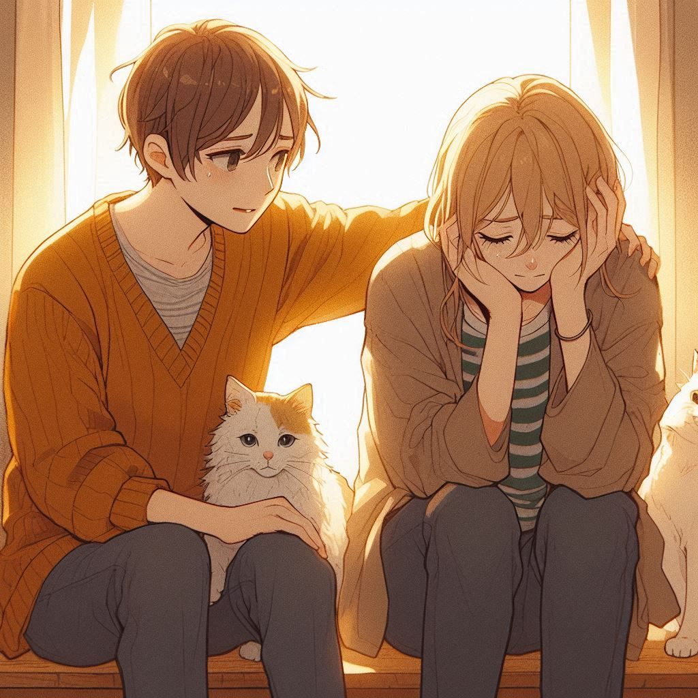

유명 유튜버 문상훈의 첫 산문집으로 꾸밈없고 솔직한 그의 생각이 그대로 드러나 있어서 읽는 데에 어려움이 없었다. 조금은 무거운 분위기로 이어지는 내용이지만 특유의 유머와 합쳐져서 재미있었다. 자신의 속을 내보이며 친구에게 위로해주는 듯한 느낌이 있어서 지칠 때 보면 좋을 것 같다.

감상평에 대한 AI평가
저자의 진솔함과 유머를 감성적으로 잘 담아낸 훌륭한 감상평입니다.
✨ 진솔함과 유머를 잘 포착: 저자의 꾸밈없고 솔직한 생각이 독자들에게 쉽게 다가갈 수 있도록 잘 표현되었습니다.
✨ 무거운 내용의 유머적 완화: 무거운 분위기 속에서도 특유의 유머를 통해 재미를 더하는 부분이 인상 깊습니다.
✨ 위로와 공감: 저자가 친구처럼 위로해주는 느낌을 잘 전달하여, 읽는 이로 하여금 위로받는 느낌을 줍니다.